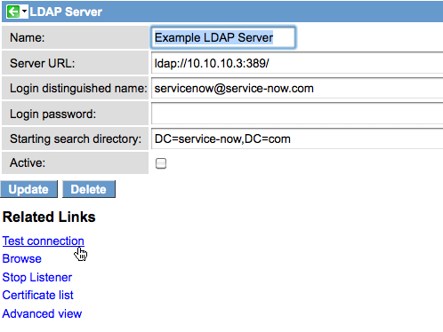

LDAP Integration Troubleshooting
| |
Note: This article applies to Fuji and earlier releases. For more current information, see LDAP Integration Troubleshooting at http://docs.servicenow.com
The ServiceNow Wiki is no longer being updated. Visit http://docs.servicenow.com for the latest product documentation. |
Contents
1 Overview
If you are integrating your LDAP server and have questions, these items may help you troubleshoot the issue. LDAP integration via MID Server troubleshooting is also included.
2 Troubleshooting Preliminary Checks
- Check the service account to ensure that it is not expired or locked out.
- If the LDAP is unavailable, users cannot log in to ServiceNow. A good practice is to have local accounts for administrators so that if the LDAP is down, administrators can still access the instance.
- Check the format of the user name. Instead of using just the user name, try using the domain with the user name, or username@domain.
- Verify that you have changed the system_id entry on the ldap_server_config record. If you modify the system_id unintentionally with an Update Set, system_id points to the wrong node for the target instance and does not work.
3 Error Codes
The LDAP Log file lists industry standard error codes for both LDAP and Active Directory (AD). The LDAP error codes are two-digit numbers, while the Active Directory error codes are three-digit numbers. For a list of the most-common error codes, see LDAP Error Codes.
3.1 Common AcceptSecurityContext Error Data Codes
An LDAP integration with Active Directory (AD) returns AcceptSecurityContext errors when a user tries to authenticate.
For example, the AD 525 error means that the user does not exist in the directory:
525 - user not found
4 Integrating Multiple Domains
You can integrate multiple domains within the same forest or in completely non-trusted domains. ServiceNow recommends creating a separate LDAP server record for each domain. Each LDAP server record must point to a domain controller for that given domain. This means you will have to allow connections to each of the domain controllers.
| |
Note: ServiceNow does not support multiple active directory forests through LDAP with one LDAP account. |
4.1 Defining Attributes
Once you expand to more than one domain it is critical that you identify unique LDAP attributes for the application user names and import coalesce values. A common unique coalesce attribute for Active Directory is objectSid. Unique user names will vary based on your LDAP data design. Common unique attributes are email or userPrincipalName.
5 Setting Record Creation Options During an LDAP Transform
See Record Creation Options During an LDAP Transform to set how the integration processes incoming LDAP records that are missing matching values in reference fields.
6 Testing LDAP Authentication
Use the Test the Connection related link to test LDAP authentication.
- Navigate to System LDAP > LDAP Servers.
- From the list of defined servers, choose the server to test. The server does not have to be in the active state to test.
- After verifying that the login credentials fields have the correct values, click Test connection.
- 
- If the connection is successful, ServiceNow displays a Connection Successful message under the LDAP Servers title bar. If the connection fails, see LDAP Authentication Errors.
- (Optional) If the connection was successful, click Browse to view the source LDAP directory structure that is visible to ServiceNow.
{kind=link}
6.1 LDAP Authentication Errors
These are common LDAP authentication errors:
6.1.1 User Cannot Log In (Invalid DN)
Users cannot log in if the Distinguished Name (DN) field for the LDAP server record does not match the DN field value listed in the user record.
Use these steps to determine if there is an invalid DN field preventing a user from logging in.
- Navigate to System LDAP > LDAP Log.
- Sort the log by the Created field.
- Search the log for the Message User Id <User name> cannot login.
- Verify that the log message shows the string No user information found in ldap for <User name>.
- Note the user name of the affected user.
- Navigate to User Administration > Users.
- Search for the affected user.
- Note the values for the LDAP Server and DN Field fields.
- Navigate to System LDAP > Servers.
- Select the user's LDAP server.
- Note the value for the DN Field. If there is no DN Field value, the LDAP server cannot use the DN for the user to authenticate against an external LDAP server. Add the matching DN Field value from the user record.
- If the LDAP server has a different DN Field value, change the DN Field in the user record to match the value as listed in the LDAP server record.
6.1.2 Invalid CN
glide.scheduler.worker.0 WARNING *** WARNING *** Exception formatting LDAP results : Invalid name: CN=+ABC\@XXX//++
The CN name is in invalid format according to the LDAP specification and needs to be escaped with an "\" character.
6.1.3 Invalid Connection
If the integration cannot connect to the LDAP server, it displays error messages at the top of the form. Verify the LDAP server name and IP address and try again.
{kind=link}
7 Troubleshooting LDAP Integration via MID Server
You may encounter issues in the following areas while integrating LDAP via MID Server. You can troubleshoot these issues by viewing the outputs found in the External Communication Channel (ECC) Queue (Discovery > Output and Artifacts > ECC Queue).
7.1 Test Connection Issues
When defining OUs within the server, there is a Test connection related list that is used to verify the LDAP connection. When you click this link, the ECC Queue should show a single output message with a topic name of LDAPConnectionTesterProbe. After the test has completed on the MID Server, the ECC Queue should show an input message with the same topic name. If the Name column for the input message shows true, the test was successful. Drill down into the record to view the payload and ensure it does not contain error messages.
{kind=link}
7.2 Browse Issues
When defining OUs within the server, there is a Browse related list that is used to view the LDAP directory records that the OU definition returns. When you click this link, the ECC Queue should show a single output message with a topic name of LDAPBrowseProbe. After data has been returned from the MID Server, the ECC Queue should show an input message with the same topic name. If the Name column for the input message shows true, the test was successful. Drill down into the record to view the payload and ensure it does not contain error messages.
{kind=link}
7.3 Load Import Issues
When uploading data (for example, using the Test Load 20 Records feature), the ECC Queue should show a single output message with a topic name of LDAPProbe.
After data has been returned from the MID Server, the ECC Queue should show another input message called LDAPProbeCompleted. The Name column for this input message shows the total number of records returned.
An additional input messages, also named LDAPProbe, is displayed. The Name column for this input message displays the highest record number in the batch. If the total number of records returned is 258 and the batch size is 200 (the default), two LDAPProbe (200, 258) incoming messages will be received, and one LDAPProbeCompleted (258) incoming message will be received.
Drill down into the record to view the payload and ensure it does not contain error messages.
{kind=link}
Also keep an eye out for an output message called LDAPProbeError.
{kind=link}
Click the link in the Name column to view the details of the error.
8 User Import
If newly created users on the LDAP server are not imported into the instance, there might be an issue with the user attributes. The first time the user is identified, if it does not have all the attributes necessary to meet the OU filter requirements, it is flagged as being not valid. The instance ignores the user and does not create a user record.